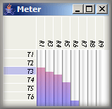

The level meter displays a column or row of the matrix formed by all active transmitters and receivers. Each cell in the column or row shows the sensitivity of the corresponding receiver at the location of the corresponding transmitter at the current timeline position. To show the sensitivities of all receivers in relation to one specific transmitter, click on the transmitters name in the left list. To show the sensitivities of one specific receiver with respect to all transmitters, click on the receiver name in the top list.
Active transmitters and receivers are those that are part of the selected groups. When no groups exist or all groups are deselected, all objects of the session are shown. See the surface object tables document to learn how to use groups.
The meter has no 'ballistics' at the moment and shows absolute linear level, where maximum corresponds to sensitivity 1.0 and minimum to sensitivity 0.0.